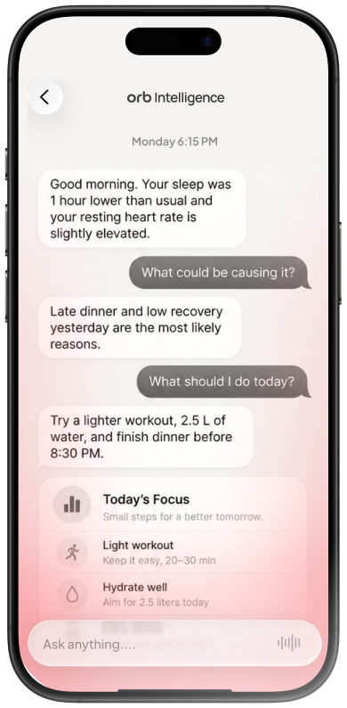
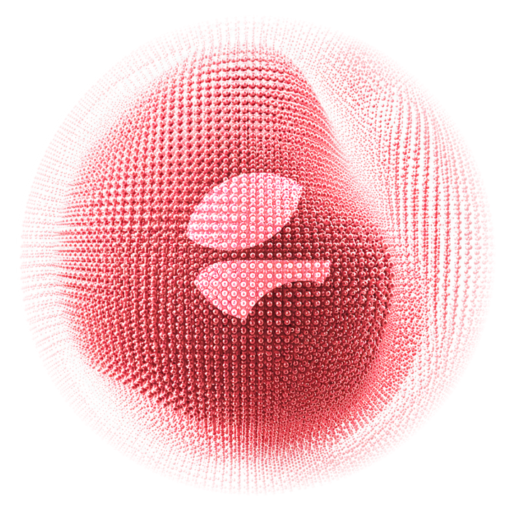
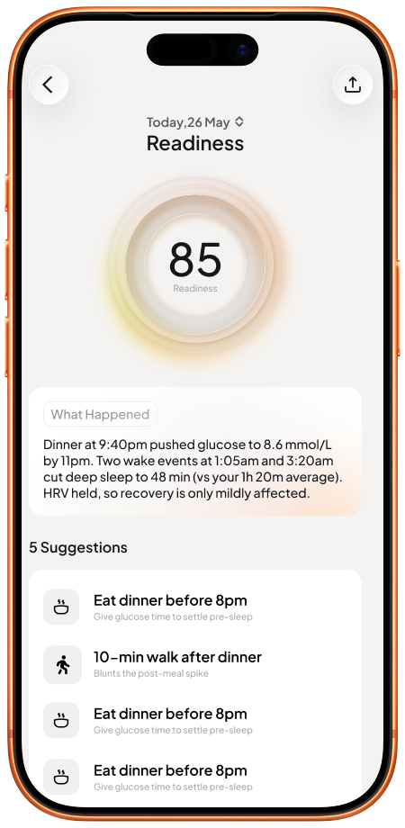
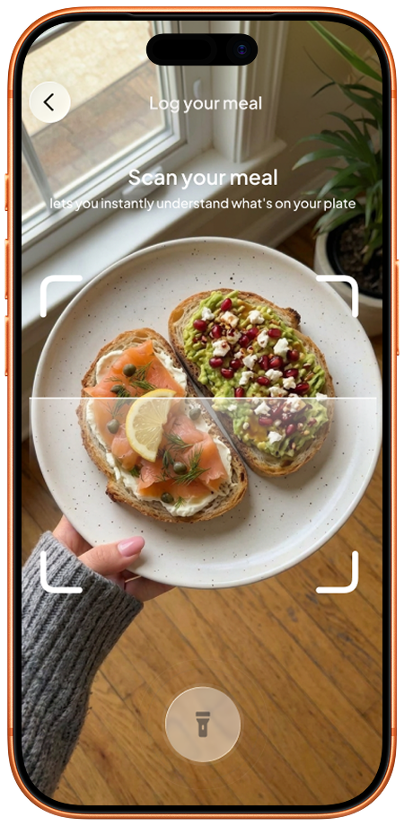
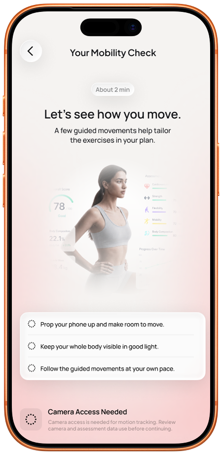
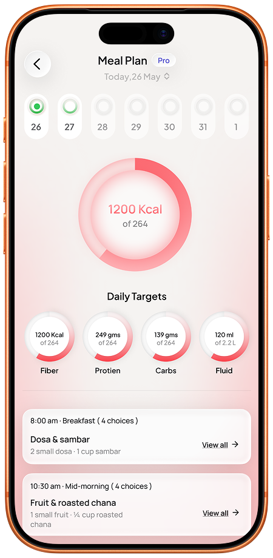
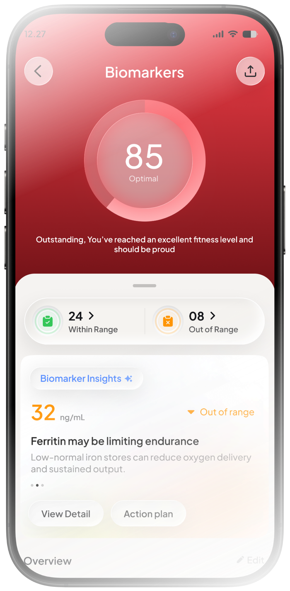
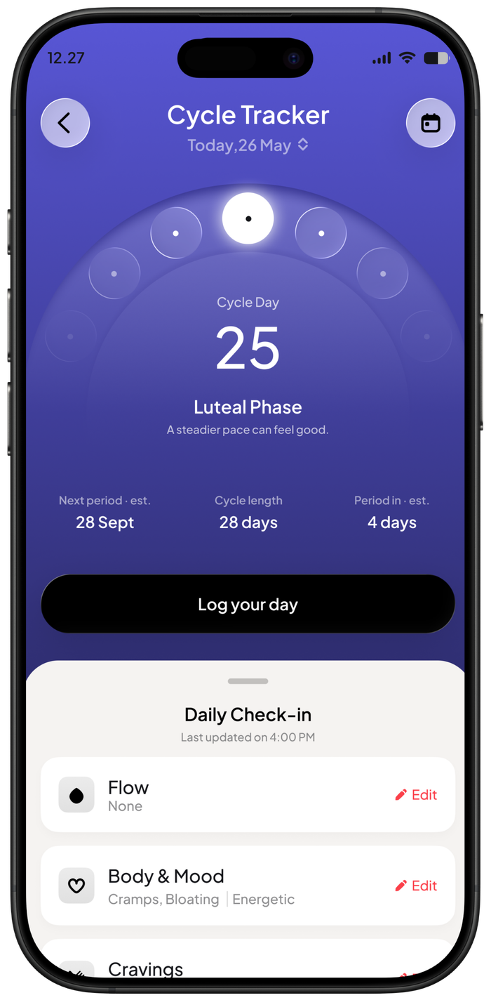

Bring your reports, daily habits and supported wearable data into one place. Put that context to work with meal plans, workouts and practical next steps you can follow.
Download Orb. Choose your plan inside the app.
Your health in context.
Blood reports
Health history
Everyday habits
Reports, history & goals
The information you already have.
Everyday signals
Sleep & recoveryActivity & workoutsMeals & habits

‹orb intelligence
A day with Orb
Orb
Your sleep was shorter than usual last night. How are you feeling this morning?
You
A little tired. I still want to exercise.
Orb
Would you like to review a lighter workout option for today?
You
Yes. I have about 20 minutes.
Today’s focus
Review a shorter workout.
Keep your meals logged.
Make time to wind down this evening.
Ask Orb about your day…
A day with Orb — illustrative example
Keep the tracker you love. Build the routine you need.
Already use WHOOP, Oura or a smartwatch? Add Orb when you want meal and workout plans, health records and daily logs working together—with professional follow-up on eligible care plans.
Your health happens beyond the numbers.Start with the information you already have.
I use a wearable
Turn what you track into a routine you can follow.
Bring supported daily readings together with your goals, food preferences and available time. Then put that context to work in your meal and workout plans.
Daily readingsFood preferencesAvailable time

Connected in Orb
Your plan, in practiceIllustrative example
Meals around your routineUsual foods, preferences and preparation time.
A workout that fits todayReview an option for the time you have.
Log, reflect and adjustKeep your daily actions and progress together.
I have reports
Give your health records a place in the bigger picture.
Keep reports and history together, add your everyday habits and bring useful context to your next consultation. Follow the priorities agreed with your professional.
Existing reportsHealth historyEveryday habits
Connected in Orb
Your context, kept togetherIllustrative example
Find the report you needKeep records, sources and dates in one place.
Prepare for a useful conversationReview changes alongside the information you share.
Keep the follow-through visibleLog your routine alongside your agreed plan.
I want a plan
Build around your life. Make the next step manageable.
Your usual foods, experience, equipment and schedule all matter. Bring them into a personal meal and workout plan, then review it as your routine changes.
Usual foodsYour starting pointYour schedule
Connected in Orb
A routine that feels like yoursIllustrative example
Know what is on the menuMeal choices shaped around your preferences.
Know what you are trainingA workout plan that considers ability and equipment.
See how your routine developsLog meals, movement and the habits you work on.
See your day come together.
Small decisions, connected. Explore how Orb can help you make the most of your everyday routine.

Morning
Start with how you feel.
Your information adds context. Your check-in helps shape what comes next.
OrbYour sleep was shorter than usual last night. How are you feeling this morning?
YouA little tired. I still want to exercise.
OrbWould you like to review a lighter workout option for today?
✓
Today’s focus
Review a shorter workout. Make time to wind down this evening.

Meals
Make room for real life.
Your usual foods, preferences and schedule belong in your meal plan.
YouI have about 15 minutes for lunch today.
OrbWhat foods do you have available? Let’s review an option that fits your meal plan and the time you have.
✓
A meal you can fit into your day
Log what you eat, check estimated portions and nutrients, and adjust as you go.

Movement
Stay in your workout.
A plan that fits your starting point. Voice logging that fits between sets.
You“Log bench press: 40 kilograms, 10 reps.”
OrbHere’s your entry. Review it before adding it to your log.
✓
Bench press
40 kg10 repsReady to review
Your day, in perspective.
Evening
Look back. Move forward.
Review your meals, movement and habits. Notice what worked for you.
YouI logged my meals and made time for a short workout.
OrbWould you like to review your day and choose a focus for tomorrow?
✓
One step at a time
Follow your progress and review your plan as your routine changes.
Built around your everyday
Eat with a plan. Move with direction.
Turn your goals into something you can follow: meals that fit your routine, workouts that fit your starting point, and a record of what you actually do.
Nutrition
A meal plan that fits your life.
Your usual foods, preferences, restrictions and preparation time help shape your plan. Review your food log alongside your targets.
Plan meals around your goals
Review estimated calories and nutrients
Keep dietitian targets in view, where included

Made around you
Food preference
Vegetarian
Preparation time
20 minutes
Your goal
Build consistency
Example preferences
Illustrative product screen and preferences
Fitness
A starting point that feels like yours.
Bring your ability, movement assessment, available days and equipment into a personal workout plan. Keep recovery in the conversation.
Build on your assessment and experience
Follow sessions and record your activity
Review your plan as your needs change
Your starting point
Equipment
Dumbbells
Available days
3 days a week
Movement
Assessment-led
Example plan inputs
Illustrative product screen and plan inputs
Illustrative screen
From your plate to your plan.
A useful plan stays connected to real life. Record a meal, check the portions and estimates, then keep the entry in your daily food record.
Log your mealRecord what you ate
Review the entryCheck portions & estimates
See your dayKeep your targets in view
Finish your set. Say what you did.
Log exercise, weight and repetitions by voice. Review the entry and get back to your workout.
“Log bench press: 40 kilograms, 10 reps.”
Illustrative example · No microphone needed
ExerciseBench press
Weight40 kg
Repetitions10
Explore plans inside the app.
A more connected picture
Your day makes more sense with the context behind it.
A wearable captures part of your day. Your reports, prescriptions, symptoms and health history add context that belongs in the same picture.
Keep your health history together
Health Vault brings reports, prescriptions and history into one place. Review changes with their dates and sources, and keep the record ready for your next professional conversation.
Give recovery a place in your day
Consider sleep, stress and training load alongside your activity and routine. Bring that context into the conversation about the day’s plan.
Follow your cycle and symptoms
Log periods, symptoms and how you feel. Review your history and estimates for upcoming cycle dates, and choose what to share for relevant professional review.
Put glucose patterns in context
Review supported glucose readings alongside food, movement and daily routines. This can help you prepare more specific questions for your care team. Connections depend on compatibility and your plan.

A usable health record
ReportsSource & date
PrescriptionsKept with your history
Changes over timeReady for review
Sleep, stress & training loadContext for your next step

Your history, in your wordsPeriods, symptoms & how you feel
A day in context
More of the story around each reading.
Food
Your meal and portion record
Glucose
Supported readings alongside your log
Movement
Activity and the rest of your routine
One view to review with your care team.
Illustrative screens and concepts · Not personal health results
Start with what you already have.
You can use Orb without a wearable. Add existing reports and daily habits, then connect a supported device if you choose. Your picture develops as you add information; gaps stay visible.
Available information depends on your device, permissions and supported integrations. Check compatibility inside Orb. Clinical decisions belong with an appropriately qualified professional.
Connected support
Keep your care plan part of your everyday.
A useful plan continues after the appointment. Bring agreed priorities into your routine, and make follow-up conversations more specific.
Support between visits
Your daily logs give your assigned professional more context for reviewing progress, where included in your care plan.
A Family Health Circle you control
Choose the information you share with family through permission-based access. Keep the people you trust in the picture.
Sharing features, professional access and follow-up depend on your plan and availability.
orb + your care team
A plan that stays with you.
An example with your dietitian
At your consultation
Agree on your nutrition priorities.
Your dietitian sets targets around your plan.
Your professional’s guidance
In your everyday life
Keep your meals in the picture.
Log food and review portions in Orb.
BreakfastMeal & portion recordLogged
At your follow-up
Review with more of the story.
Your assigned dietitian can review entries alongside your plan.
Illustrative workflow · Eligible care plans
Family sharing is your choice.Give permission for selected information.
Getting started
Begin where you are.
You don’t need a perfect record of your health. Start with what you know, and build from there.
01
Make it yours.
Set up your profile. Tell Orb about your goals, preferences and everyday routine.
02
Bring what you have.
Add existing reports, log your habits or connect a supported wearable.
03
Find your daily rhythm.
Explore available plans in the app. Begin using the daily tools included in the plan you choose.
No wearable required. You can begin with your habits and existing reports.
Find your plan in Orb
Choose a plan. Build your routine.
Make room for the tools you will use: meal planning, workouts, health records and daily guidance. Compare Orb plans and choose the combination that fits your life.
See current prices and inclusions inside the app.
Find the tools and support you need
✓
Daily guidance & progress
Know what is planned, keep a record and see your progress.
✓
Food & movement
Put your meal and workout plans into practice, day by day.
✓
Your health information
Keep reports, history and everyday information in context.
✓
Connected support
Carry agreed priorities into daily life, where included.
Features and services vary by plan, location and availability.
Before you begin
A little clarity goes a long way.
A few things you may be wondering about Orb.
I already use WHOOP or Oura. Why add Orb?
Choose Orb for the parts of your routine you want to bring together: meal and workout plans, food and activity logs, health records and eligible professional support. You can keep using your preferred wearable. Check Orb’s supported integrations before connecting a device, and compare the tools included in each plan with what you already use.
What makes Orb personal to me?
Your goals, food preferences, routine, experience and available equipment help shape your plans. Shared health history, supported daily information and agreed professional priorities add context. The information available shapes the picture; Orb does not assume that missing data is a complete record.
Do I need a wearable or new blood tests?
No. You can start with your profile, habits and reports you already have. A supported wearable can add information, but it isn’t required. Any additional tests or assessments depend on your needs and the service you choose.
Where do I see prices and choose a plan?
Download Orb, then compare available plans, current prices and included features inside the app before subscribing. Check the terms presented with your selected plan.
Does every plan include a professional?
Professional access is available through eligible plans. Check which consultations, follow-up arrangements and services are included, along with availability in your location.
Can Orb replace my doctor?
No. Orb provides AI-supported information, tracking and guidance. Clinical assessment, diagnosis and treatment require an appropriately qualified professional.
How can I learn about data use and sharing?
Review Cureocity’s privacy information to understand how health information is collected, used and shared. Family sharing uses permission-based access to selected information.
Orb by Cureocity
A clearer day starts with Orb.
Bring your health information into everyday life. Find your next step, and follow your progress.